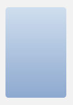
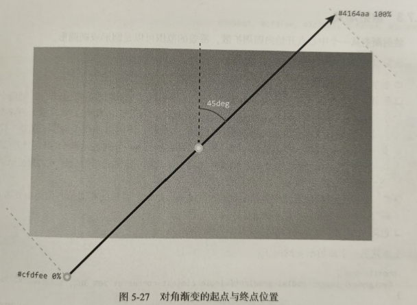
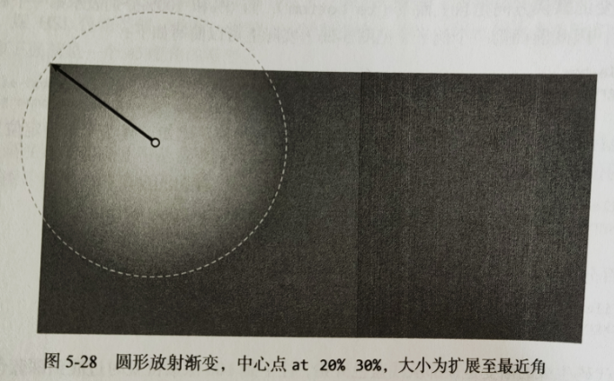
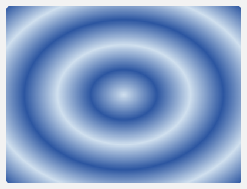
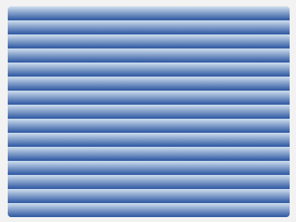
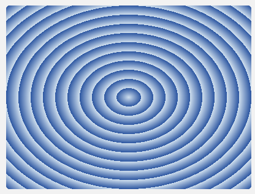
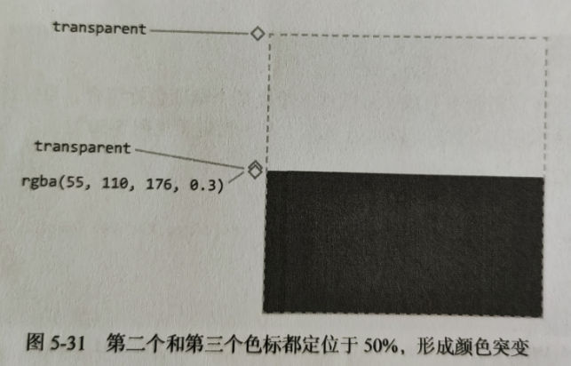
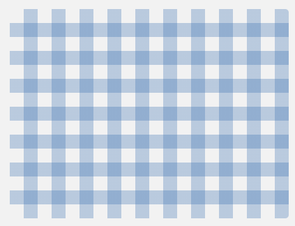

在背景上使用渐变色是一种常见设计，能够页面增加一种纵深感。
.profile-box {
background-image: linear-gradient(to bottom, #cfdeee 0%, #8da9cf 100%);
}

前面的例子使用了 linear-gradient 函数，沿一条假象线，从元素顶部到底部绘制了一个渐变背景。
这条线的角度由这个函数的第一对关键字（to bottom）表示，其后是由逗号分隔的色标，色标用于在渐变线上标出颜色发生变化的位置，在这个例子中，位置 0% 处的颜色是浅蓝灰色，而位置 100% 也就是元素底部的颜色是深蓝色。
渐变线的方向可以使用关键字 to，再加上一个表示边（top、right、bottom、left）或表示角（top left、top right、bottom left、bottom right）的关键字来指定，后者指定的是对角线。渐变线总是始于元素的一个边或一个角，然后穿过元素的中心区域。
此外，还可以使用 deg 单位指定渐变线的角度，0deg 表示垂直向上，增大角度值就意味着沿顺时针方向旋转，直到 360 度，跟 HSL 色轮类似。此时，度数表示绘制渐变的方向，因此起点就在我们指定的相反方向。
比如下面就是一个 45 度角的渐变：
.profile-box {
background-image: linear-gradient(45deg, #cfdeee, #8da9cf);
}
此时，渐变线的起点并不是背景图片区域的边，而是自动延长线的角，

m 默认值及色标位置
线性渐变的默认方向是自上而下（to bottom），而 0% 和 100% 分别表示第一个和最后一个色标的位置，因此前面第一个例子实际上可以简写如下：
.profile-box {
background-image: linear-gradient(#cfdeee, #8da9cf);
}
新增色标若未指定位置，则在 0% ~ 100% 范围内取值。比如，有 5 个未指定位置的色标，那么它们的位置分别为 0%、25%、50%、75%、100%。
.profile-box {
background-image: linear-gradient(red, green, blue, yellow, purple);
}
处理百分比，还可以使用绝对值指定色标位置，比如：
.profile-box {
background-image: linear-gradient(#cfdeee, #8da9cf 100px);
}
这行代码生成的渐变是顶部从浅蓝色开始，往下到 100 像素位置时过渡到深蓝色，然后一直到背景图片区域底部都是同样的深蓝色。
放射渐变从一个中心点开始向四周扩散，覆盖的范围可以是圆形或椭圆形。
涉及如下属性：
放射渐变的类型: 圆形（circle）或椭圆形（ellipse）。
射线半径决定渐变范围大小。圆形只接受一个半径值，而椭圆形接受 x 轴和 y 轴两个方向的半径值。椭圆形可以接受任意长度或百分比值，百分比值相对于对应轴向的背景图片大小。圆形只接受长度值，不接受百分比值。此外，还可以使用关键字，关键字代表渐变区域结束的位置：closest-side 和 farthest-corner 分别表示渐变区域边缘接触最近角还是最远角。
渐变区域中心的位置使用类似 background-position 属性的相对值，但前面要加 at 关键字，以说明它们不表示大小。
色标沿渐变扩展方向指定，以逗号分隔。
.profile-box {
background-image: radial-gradient(
circle closest-cornet at 20% 30%,
#cfdfee,
#2c56a1
);
}
这样就会得到一个圆形放射渐变，中心点为 x 轴方向 20%，y 轴方向 30%，圆周范围到与最临近的角度接触为止。

.profile-box {
background-image: radial-gradient(
#cfdfee,
#2c56a1,
#cfdfee,
#2c56a1,
#cfdfee,
#2c56a1
);
}

重复渐变函数可以沿渐变直线（或射线）重复某个渐变色标组合，重复次数视其大小（由 background-size 决定）及允许的大小（元素大小）而定。
.linear-repeat {
background-image: repeating-linear-gradient(#cfdfee, #2c56a1 20px);
}

.radial-repeat {
background-image: repeating-radial-gradient(#cfdfee, #2c56a1 20px);
}

渐变不一定需要很多像素来过渡，它也可以是突然的变化，从而形成锐利的线条或圆环，再搭配可以相互叠加的多重背景，就可以通过声明语法创造出简单的背景图案
比如，要绘制一条垂直线，就要把相邻的两个色标重叠在一起，让渐变无从发生
.profile-box {
background: linear-gradient(
transparent,
transparent 50%,
rgba(55, 110, 176, 0.3) 50%
);
}

我们没有在整个元素上使用多个线性渐变，而是只使用了一个，然后通过背景相关的属性控制其大小和重复，这样不仅能控制线条的多少，还不影响色标，然后我们再添加一个类似的水平方向的渐变，就完成了一张 “桌布” 图案
.profile-box {
background: linear-gradient(
transparent,
transparent 50%,
rgba(55, 110, 176, 0.3) 50%
), linear-gradient(
to right,
transparent,
transparent 50%,
rgba(55, 110, 176, 0.3) 50%
);
background-size: 40px 40px;
}

渐变图形网站：https://projects.verou.me/css3patterns/